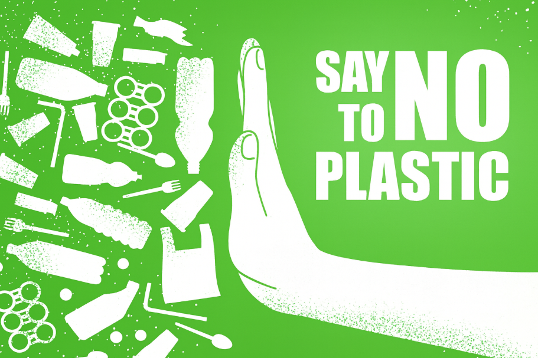

2025 Dünya Çevre Günü’nün teması “Plastik Kirliliğine Son Vermek” (Ending Plastic Pollution) olarak belirlenmiştir. Bu tema, Birleşmiş Milletler Çevre Programı (UNEP) tarafından yürütülen #BeatPlasticPollution kampanyasıyla birlikte küresel çapta duyurulmuştur.
“Plastik Kirliliğine Son Vermek”, küresel çevresel krizin en acil ve görünür yönlerinden birine dikkat çekiyor. Plastik kirliliği; iklim değişikliği, biyolojik çeşitliliğin kaybı ve kirlilik olmak üzere doğanın karşı karşıya olduğu üç büyük tehdidi daha da derinleştiriyor.
İklim Değişikliği: Plastik üretimi fosil yakıtlara dayanıyor ve sera gazı emisyonlarını artırıyor. Ayrıca, atık plastiklerin yakılması da havaya zararlı gazlar salıyor.
Biyolojik Çeşitlilik Kaybı: Okyanuslardaki plastik atıklar, deniz canlılarının yaşamını tehdit ediyor. Mikroplastikler, besin zincirine karışarak ekosistemlere zarar veriyor.
Kirlilik: Toprak ve su kaynaklarındaki plastikler, insan sağlığını olumsuz etkiliyor. Mikroplastikler içme sularına ve gıdalara kadar ulaşıyor.